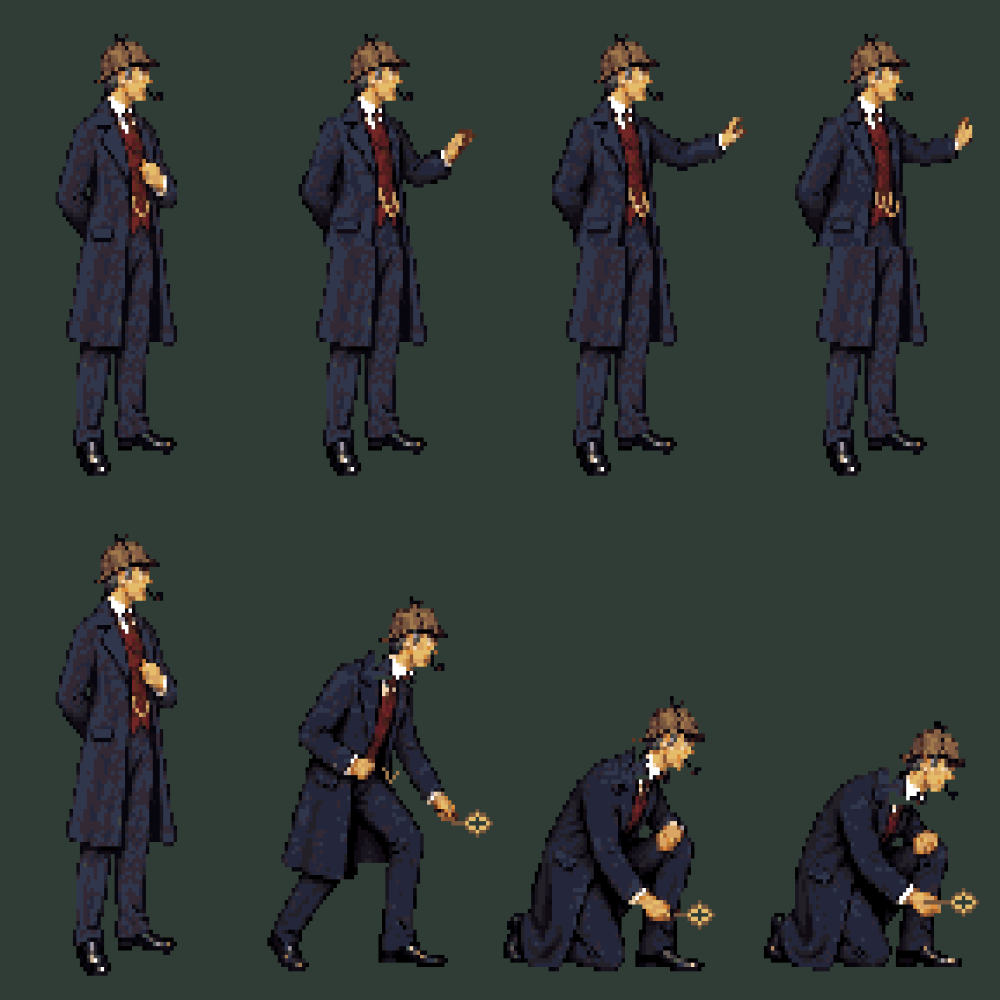
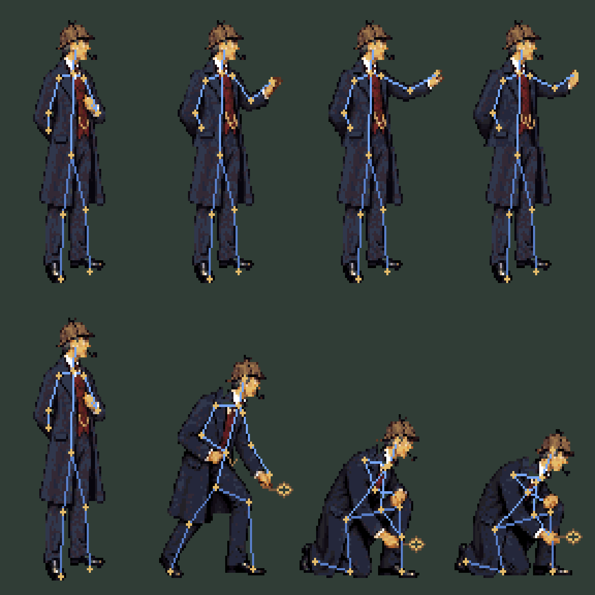

First pass: four drawn keys per action, with holds and a return to the fixed neutral. The reach establishes contact; clock travel is the next choreography pass.
72×120 native canvas · anchor [36, 113] · shared 64-color palette · 1:1.2 pixel aspect. Joint points annotate the drawings; they do not deform them or certify anatomy.
Editable Pixelorama keys · Sources and learning notes · Timing and contact data

